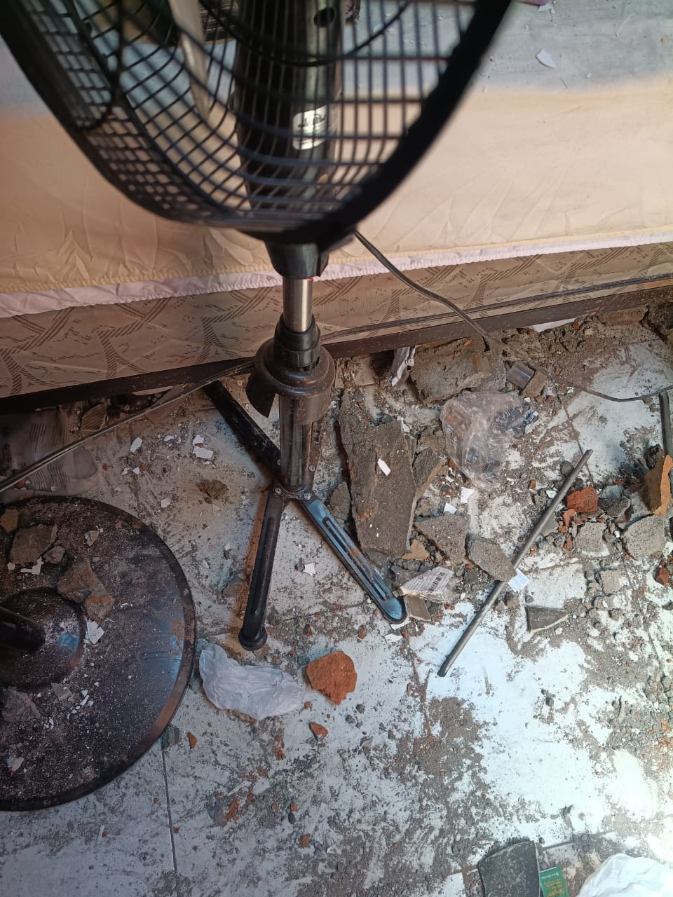
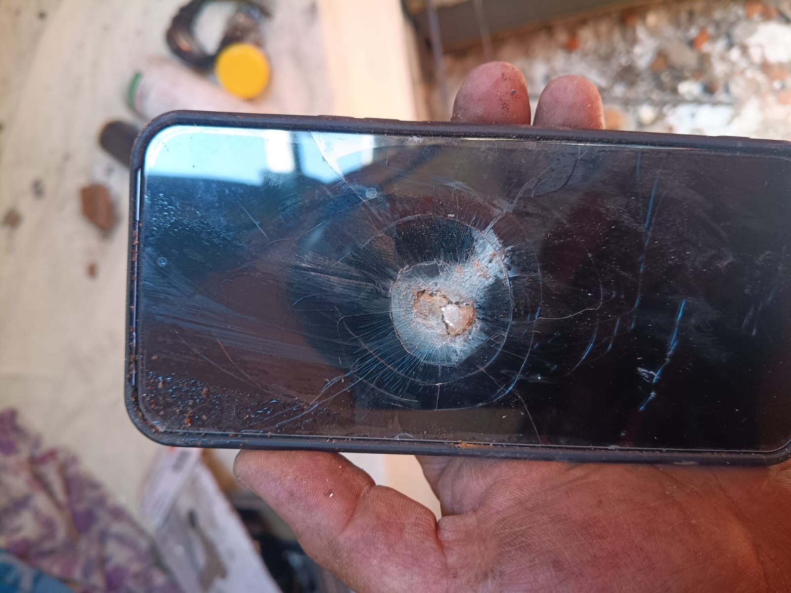
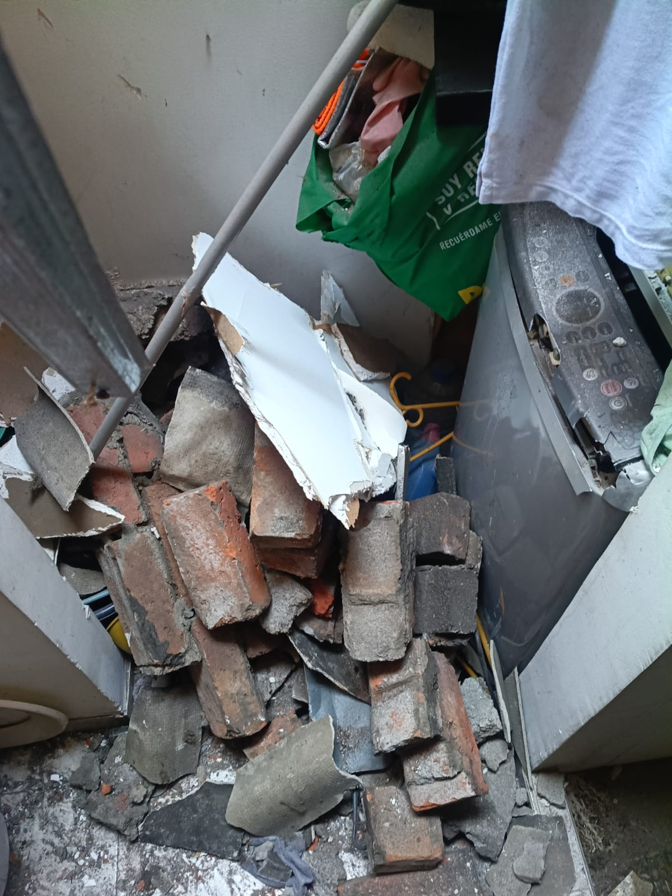
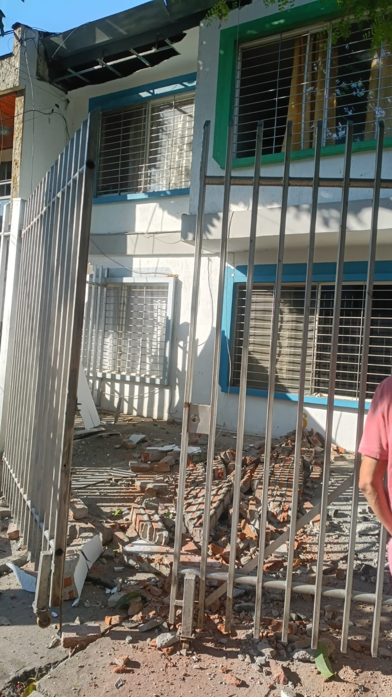
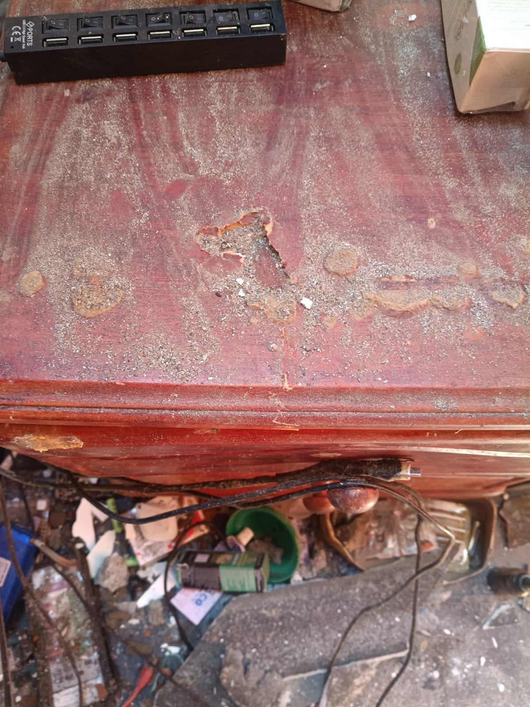

Un'iniziativa di solidarietà promossa da Carlo Vendittelli
per sostenere 60 lavoratori e le rispettive famiglie
che stanno attraversando una situazione di grave difficoltà.
UN APPELLO ALLA SOLIDARIETÀ DEGLI ITALIANI
60
LAVORATORI E LE LORO FAMIGLIE
Il terremoto che ha colpito la Colombia
Il 10 agosto 2026, alle ore 7:34 del mattino, un violento
terremoto di magnitudo 7,4 ha colpito la Colombia,
con epicentro nel comune di San José del Palmar,
nel dipartimento del Chocó, a una profondità di
103 chilometri.
Secondo i dati ufficiali pubblicati dalle autorità colombiane,
il sisma ha avuto conseguenze in numerose aree del Paese.
Il bilancio nazionale della UNGRD, aggiornato a ottobre 2026,
registra 778.281 persone coinvolte in 409 comuni
di 16 dipartimenti.
778.281Persone coinvolte
409Comuni interessati
16Dipartimenti interessati
255.079Abitazioni danneggiate o distrutte
Il bilancio ufficiale comprende 203.301 abitazioni
danneggiate e 51.778 distrutte, oltre a gravi conseguenze
per le strutture scolastiche, le infrastrutture e i servizi.
Una catastrofe che ha lasciato moltissime persone nella
necessità di ricostruire la propria vita, la propria casa
e il proprio futuro.
Le informazioni e i dati ufficiali relativi al terremoto
sono consultabili nella sezione dedicata alle fonti
istituzionali riportata in fondo a questa pagina.
La mia storia e quella di 60 famiglie
Mi chiamo Carlo Vendittelli, sono italiano e avevo realizzato
in Colombia un'attività produttiva dedicata alla fabbricazione
di viti, bulloni e chiodi, creando
un'opportunità di lavoro per 60 persone.
Purtroppo, il terremoto ha distrutto la fabbrica e ha
compromesso il futuro lavorativo di tutti i suoi dipendenti.
Molti di questi lavoratori e delle loro famiglie hanno perso
anche le proprie abitazioni, ritrovandosi improvvisamente
senza un lavoro, senza una casa e con enormi difficoltà
nel reperire persino i beni di prima necessità.
Non si tratta soltanto di ricostruire una fabbrica.
Si tratta di aiutare persone che hanno perso il lavoro,
la casa e la possibilità di provvedere autonomamente
alle necessità quotidiane delle proprie famiglie.
Il mio impegno personale
Per cercare di aiutare le persone coinvolte e sostenere
i 60 lavoratori e le loro famiglie, ho utilizzato circa
280.000 euro dei miei risparmi personali,
cercando di garantire loro un sostegno durante questo
periodo drammatico.
Una parte importante di queste risorse è stata destinata
anche all'acquisto e alla distribuzione immediata di generi
di prima necessità per numerose famiglie colpite dal
terremoto, compresi molti dei miei vicini di casa.
Attualmente sono in attesa del rimborso assicurativo
necessario per poter ricostruire la fabbrica e riportare
al lavoro le 60 persone che dipendevano da questa attività.
Nel frattempo, le mie risorse economiche sono ormai esaurite.
Oggi, purtroppo, non sono più in grado di sostenere da solo
le necessità dei miei 60 lavoratori e delle rispettive famiglie.
Il nostro obiettivo: sostenere 60 famiglie fino ad aprile 2027
Il mio obiettivo è riuscire a garantire a ciascuna delle
60 famiglie un sostegno economico indicativo di almeno
300 euro al mese per cinque mesi, per contribuire
alle spese alimentari, ai beni di prima necessità e al pagamento
di un alloggio temporaneo.
18.000 euro al mese per sostenere 60 famiglie.
90.000 euro complessivi nell'arco di cinque mesi.
Il periodo di sostegno è stato individuato considerando che,
secondo le mie attuali previsioni, conto di ricevere entro
aprile 2027 il rimborso assicurativo necessario per ricostruire
la fabbrica e riprendere l'attività produttiva, con l'obiettivo
di offrire nuovamente un lavoro ai 60 dipendenti.
Queste cifre rappresentano l'obiettivo che vorrei raggiungere
per aiutare le famiglie durante il periodo di attesa.
Il raggiungimento dell'obiettivo economico e i tempi del
rimborso assicurativo non sono garantiti; la durata effettiva
del sostegno dipenderà dalle donazioni ricevute e
dall'evoluzione della situazione.
Il mio desiderio è che nessuna di queste famiglie venga
lasciata sola mentre cerca di ricostruire la propria vita.
Un gesto di solidarietà
Questa iniziativa nasce dal desiderio di non abbandonare
queste 60 famiglie proprio nel momento in cui hanno
più bisogno di aiuto.
Desidero inoltre ringraziare in particolar modo
il sacerdote della comunità sarda, per la sua vicinanza,
la sua sensibilità e il sostegno umano e spirituale
alle persone coinvolte in questa tragedia.
Desidero rivolgere un ringraziamento particolare
alla comunità sarda, per la sua generosità,
il suo altruismo e la sua sensibilità dimostrati
di fronte a questa tragedia.
Un gesto di solidarietà che merita tutta la mia riconoscenza,
perché una catastrofe naturale può colpire chiunque,
in qualsiasi momento, arrivando improvvisamente,
senza preavviso e senza fare distinzioni.
Nessuno è immune da simili tragedie e proprio per questo
la solidarietà umana diventa fondamentale.
Le donazioni saranno destinate ad aiutare concretamente
i lavoratori e le loro famiglie, contribuendo alle necessità
quotidiane e all'acquisto dei beni essenziali.
Un obiettivo possibile, grazie alla solidarietà di tutti
Raggiungere questo obiettivo di solidarietà non è impossibile.
Con la partecipazione di una comunità anche di sole 500 persone,
unite dalla volontà di aiutare chi si trova in difficoltà,
possiamo provare a raggiungere il traguardo di 90.000 euro
in cinque mesi.
Non è necessario che tutti contribuiscano con la stessa cifra,
anche se basterebbero appena 36 euro al mese a persona per
5 mesi. Anche un piccolo gesto può diventare un aiuto concreto
e importante. Chi avesse la possibilità di donare 50 o 100 euro
al mese, ovviamente, potrebbe offrire un sostegno significativo:
in questo caso non ci sarebbe bisogno di 500 persone, ma ne
basterebbero molte meno. E comunque, chi potesse contribuire
con una cifra inferiore sarebbe altrettanto prezioso.
Donare non è un obbligo. Qualsiasi somma sarà
accolta con profonda gratitudine, secondo le possibilità,
il buon cuore e l'altruismo di ciascuno. Non conta soltanto
quanto si dona, ma anche il desiderio sincero di tendere
una mano a chi sta vivendo una situazione drammatica.
Come ho già detto, queste 60 famiglie hanno perso praticamente
tutto: il lavoro, la casa e le certezze sulle quali avevano
costruito la propria vita. Tra loro ci sono anche bambini piccoli,
che hanno bisogno di un tetto sicuro, di cibo e delle condizioni
necessarie per vivere con dignità.
Pensiamo per un momento a quanto accaduto: una tragedia improvvisa
può colpire chiunque, senza preavviso. Sarebbe potuto succedere
anche a te, in Italia, alla tua famiglia, ai tuoi vicini o alle
persone che ami. In pochi istanti, una vita normale può
trasformarsi in una lotta quotidiana per sopravvivere.
Queste famiglie, proprio come me, si sono ritrovate impreparate
ad affrontare una situazione tanto grave. Oggi, nonostante i miei
sforzi, faccio fatica a procurare loro persino le cose più
essenziali. Il mio desiderio è aiutarle a superare questi mesi
difficili, in attesa della possibilità di ricostruire la fabbrica
e restituire ai 60 lavoratori una prospettiva di lavoro e quella
vita che avevano prima della tragedia.
Vorrei soprattutto che i bambini potessero vivere
un Natale più sereno, con un pasto dignitoso, un luogo
sicuro in cui dormire e la tranquillità di sentirsi protetti,
nonostante tutto quello che è successo.
Non chiedo a nessuno di fare sacrifici che non può permettersi.
Chiedo soltanto, a chi ne ha la possibilità e lo desidera,
di valutare un gesto di solidarietà.
A volte, ciò che per una persona rappresenta una piccola rinuncia
può diventare per un'altra una spesa alimentare, un aiuto per
pagare una stanza o un po' di serenità per i propri figli.
Grazie di cuore a chiunque vorrà partecipare, con qualsiasi cifra,
e a chi contribuirà anche semplicemente facendo conoscere
questa iniziativa.
La solidarietà non si misura soltanto in denaro, ma nella
capacità di non voltarsi dall'altra parte quando qualcuno
ha perso tutto.
Grazie ancora.
Carlo Vendittelli
Come verranno utilizzate le donazioni
La finalità della raccolta è sostenere le necessità essenziali
dei 60 lavoratori e delle loro famiglie, con particolare
attenzione all'acquisto di generi alimentari di prima necessità
e al pagamento di un alloggio temporaneo per ciascuna famiglia.
Le donazioni saranno raccolte sul conto intestato a
Carlo Vendittelli e destinate alla finalità dichiarata
in questa iniziativa.
Tutti gli aggiornamenti sui progressi dell'iniziativa saranno
pubblicati regolarmente, in base alla ricezione delle donazioni.
Sarà possibile seguire concretamente i risultati raggiunti,
attraverso la documentazione e la testimonianza dei progressi
realizzati grazie alla generosità di chi avrà scelto di contribuire.
Fotografie e video: testimonianze della tragedia
In questa sezione saranno pubblicate fotografie e registrazioni
video realizzate da Carlo Vendittelli per documentare i danni
provocati dal terremoto e le conseguenze vissute dalle persone
coinvolte.
Documentazione fotografica e video
Le fotografie e i video originali saranno aggiunti
progressivamente. Questa sezione verrà aggiornata
con i materiali disponibili.
Fotografie

Documentazione fotografica 1

Documentazione fotografica 2

Documentazione fotografica 3

Documentazione fotografica 4

Documentazione fotografica 5
Video
Il video documentario sarà inserito prossimamente.
PUOI CONTRIBUIRE ANCHE TU
Ogni contributo volontario, piccolo o grande,
può rappresentare un aiuto concreto per queste famiglie.
Grazie a chi vorrà partecipare a questa iniziativa.
Le modalità di pagamento sono in fase di attivazione.
I pulsanti non sono ancora operativi.
Le coordinate bancarie e il collegamento PayPal
saranno pubblicati dopo le verifiche necessarie.
Intestatario: Carlo Vendittelli Causale: AIUTO VITTIME TERREMOTO IN COLOMBIA
Ogni aiuto sarà un passo verso la rinascita
Grazie di cuore per il vostro prezioso aiuto
e per la vostra generosità.
Facciamo in modo che queste famiglie possano trascorrere
un Natale tranquillo e sereno.
Sono famiglie che hanno visto la morte in faccia
e che hanno perso completamente tutto ciò per cui
avevano lavorato e lottato per anni: le proprie case,
i propri beni e il frutto di tanti sacrifici.
Non lasciamole sole proprio adesso.
INSIEME POSSIAMO AIUTARLE A RICOMINCIARE.
Fonti ufficiali
I dati relativi all'evento sismico e al bilancio nazionale
riportati in questa pagina sono consultabili attraverso
i seguenti enti istituzionali: